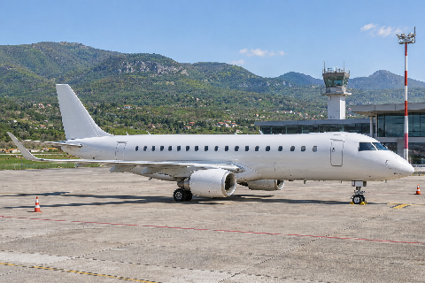

路線 / 解説
エア・セルビア、2027年3月28日からベオグラード―ポドゴリツァを週34便
現在の週21便から13便増加。毎日4便、週6日は5便目を追加予定です。

短距離路線では距離より便数が旅の自由度を変えます。エア・セルビアは11月12日、ベオグラード―ポドゴリツァ線を2027年3月28日から週21便から34便へ増やすと発表しました。冬ダイヤがすぐ変わるわけではありません。
週21便は1日3便。新ダイヤは毎日4便を基本に、週6日は5便目を加えます。13便、約62%の増加で、出発・乗継時刻の選択肢が広がります。
ベオグラードは同社のハブ、ポドゴリツァはモンテネグロ内陸とアドリア海岸への玄関です。2026年1～9月の利用者は16万人超で前年同期比約5%増でした。
週34便は全曜日に同じ配分ではありません。実際の時刻を確認し、空港コードBEGとTGDを見てください。ティヴァトは別空港です。
増便で振替候補は増えますが、混雑時の座席を保証しません。別切りの接続便も保護されない場合があります。
3月28日は欧州の夏ダイヤ開始と時計変更の時期です。機材、全時刻、シーズン後の継続は未公表なので春の予約を再確認しましょう。